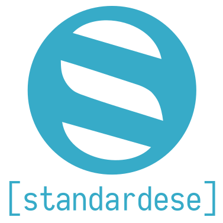

Standardese aims to be a nextgen Doxygen. It consists of two parts: a library and a tool.
The library aims at becoming the documentation frontend that can be easily extended and customized. It parses C++ code with the help of libclang and provides access to it.
The tool drives the library to generate documentation for user-specified files. It supports a couple of output formats including Markdown and HTML as well as experimental Latex and Man pages.
Read more in the introductory blog post.

If you like this project, consider supporting me on Patreon. It would really help!
Basic example
Consider the following C++ header file named swap.hpp:
#include <type_traits>
namespace std
{
/// \effects Exchanges values stored in two locations.
/// \requires Type `T` shall be `MoveConstructible` and `MoveAssignable`.
template <class T>
void swap(T &a, T &b) noexcept(is_nothrow_move_constructible<T>::value &&
is_nothrow_move_assignable<T>::value);
}
This will generate the following documentation:
#Header file swap.hpp
#include <type_traits>
namespace std
{
template <typename T>
void swap(T & a, T & b) noexcept(is_nothrow_move_constructible<T>::value &&
is_nothrow_move_assignable<T>::value);
}
##Function template swap<T>
template <typename T>
void swap(T & a, T & b) noexcept(is_nothrow_move_constructible<T>::value &&
is_nothrow_move_assignable<T>::value);
Effects: Exchanges values stored in two locations.
Requires: Type T shall be MoveConstructible and MoveAssignable.
The example makes it already clear: Standardese aims to provide a documentation in a similar way to the C++ standard - hence the name.
This means that it provides commands to introduce so called sections in the documentation.
The current sections are all the C++ standard lists in [structure.specifications]/3 like \effects, \requires, \returns and \throws.
For a more complete example check out my Meeting C++ Lightning Talk.
Installation
Very Easy: Pre-compiled Binaries
TODO
Easy: Docker
The easiest way to build standardese is to download the docker image foonathan/standardese_dev and run it like so:
docker pull foonathan/standardese_dev
docker run -v "/path/to/standardese/source:/root/standardese" -v "$(pwd):/root/output" foonathan/standardese_dev
It will compile standardese as a fully statically linked binary and copy it to the current working directory.
The binary is compatible with any Linux distribution.
Harder: Building From Source
The build system takes care of all dependencies automatically, except for two: Boost and libclang.
It needs to have Boost.ProgramOptions and Boost.Filesystem as statically linked binaries. If they’re installed, they should be found automatically.
It also needs libclang.
If you are under a Linux system, it should find the llvm-config binary automatically and everything works,
otherwise things are a bit harder.
Read the cppast build instructions for more information, they also apply here.
Once they’re installed, compiling is a simple:
cmake /path/to/standardese/source
cmake --build . --target standardese_tool
The result is the executable tool/standardese.
TODO: cmake installation
Documentation
If you need help or encounter a problem please contact me on gitter, I’ll usually answer within a day or faster.
Basic commandline usage
The tool uses Boost.ProgramOptions for the options parsing, --help gives a good overview.
Basic usage is: standardese [options] inputs
The inputs can be both files or directories, in case of directory each file is documented, unless an input option is specified (see below).
The tool will currently generate a corresponding Markdown file with the documentation for each file it gets as input.
Files that are not source files (determined by the input.source_ext option), will be treated as template files (see below).
Note: You only need and should give header files to standardese. The source files are unnecessary.
The options listed under “Generic options:” must be given to the commandline. They include things like getting the version, enabling verbose output (please provide it for issues) or passing an additional configuration file.
The options listed under “Configuration” can be passed both to the commandline and to the config file. They are subdivided into various sections:
The
input.*options are related to the inputs given to the tool. They can be used to filter, both the files inside a directory and the entities in the source code.The
compilation.*options are related to the compilation of the source. You can pass macro definitions and include directories as well as acommands_dir. This is a directory where acompile_commands.jsonfile is located. standardese will pass all the flags of all files to libclang.
This has technical reasons because you give header files whereas the compile commands use only source files.
The
comment.*options are related to the syntax of the documentation markup. You can set both the leading character and the name for each command, for example.The
template.*options are related to the syntax of the template markup. You can set both the delimiters and the name for each command, for example.The
output.*options are related to the output generation. It contains an option to set the human readable name of a section, for example.
The configuration file you can pass with --config uses an INI style syntax, e.g:
[compilation]
include_dir=foo/
macro_definition=FOO
[input]
blacklist_namespace=detail
extract_private=true
Basic CMake usage
To ease the compilation options, you can call standardese from CMake like so:
find_package(standardese REQUIRED) # find standardese after installation
# generates a custom target that will run standardese to generate the documentation
standardese_generate(my_target CONFIG path/to/config_file
INCLUDE_DIRECTORY ${my_target_includedirs}
INPUT ${headers})
It will use a custom target that runs standardese. You can specify the compilation options and inputs directly in CMake to allow shared variables. All other options must be given in a config file.
If you don’t have standardese installed, you can also include it directly:
set(STANDARDESE_TOOL /path/to/standardese/binary)
include(/path/to/standardese/standardese-config.cmake)
# call standardese_generate() like normal
See standardese-config.cmake for a documentation of standardese_generate().
Documentation syntax overview
standardese looks for documentation comments as shown in the following example:
/// A regular C++ style documentation comment.
/// Multiple C++ style comments are merged automatically.
/// This line has *two* leading whitespaces because one is always skipped.
//! A C++ style comment using an exclamation mark.
/// It will also merge with other C++ style comments.
//! But don't worry, also with the exclamation mark styles.
/** A C style documentation commment. */
/** This is a different comment, they aren't merged.
* But you can be fancy with the star at the beginning of the line.
* It will ignore all whitespace, the star and the first following whitespace.
*/
/*! You can also use an exclamation mark. */
/// But neither will merge with any other comment.
int x; //< An end-of-line comment.
/// It will merge with C++ style comments.
int y; //< But this is a different end-of-line comment.
A comment corresponds to the entity on the line directly below or on the same line.
You can document all entities that way except files (use file command), namespaces (use entity command),
and inline entities such as parameters or base classes (use param/tparam/base command or entity command).
Inside the comment you can use arbitrary* Markdown* in the documentation comments and it will be rendered appropriately.
The Markdown flavor used is CommonMark. standardese does not support inline HTML (for obvious reasons) or images. Inline HTML that isn’t a raw HTML block will be treated as literal text. This allows writing
vector<T>without markup or escaping in the comment, for example.
Note: CommonMark allows hard line breaks with a backslash at the end of the line. But the C preprocessor uses a backslash to combine multiple lines into one. For that reason you cannot use a backslash there, instead you can use a forward slash.
Linking
To link to an entity, use the syntax [link-text](<> "unique-name") (a CommonMark link with empty URL and a title of unique-name). If you don’t want a special link-text, this can be shortened to [unique-name]() (a CommonMark link with empty URL and the name of an entity as text).
You can also use an URL of the following form [link-text](standardese://unique-name/ "optional-title") (a normal CommonMark link with the standardese:// protocol, the ‘/’ at the end is important).
In either case standardese will insert the correct URL by searching for the entity with the given unique-name.
The unique-name of an entity is the name with all scopes, i.e. foo::bar::baz.
For templates (but not function templates) you need to append all parameters, i.e.
foo<A, B, C>.For functions you need to append the signature (parameter types and cv and ref qualifier), i.e.
func(),bar(int,char)ortype::foo() const &&. If the signature is(), you can omit it.For (template) parameters it is of the form
function-unique-name.parameter-nameFor base classes it is of the form
derived-class::base-class
The unique-name doesn’t care about whitespace, so bar(const char*), bar(const char *) and bar (constchar*) are all the same.
Because it is sometimes long and ugly, you can override the unique name via the unique_name command (see below).
For example you can override
bar(long, list, of, parameters)tobar(). But keep in mind that it must be unique with regard to all overloads etc. Usually numbering would be a good choice, sobar() (1)or similar.
You can also use a short unique-name if there aren’t multiple entities resolved to the same short name.
The short name is the unique-name but without a signature or template parameters, i.e. for foo<T>::func<U>(int) const, the short name is foo::func.
Name lookup
If you prefix a unique name with * or ?, this will do a name lookup, looking for the entity.
This only works inside a comment associated with an entity, not in template files etc.
It does a similar search to the actual name lookup in C++: It starts at the associated entity and appends its scope to the partial unique name given, going to the next higher entity if no matching entity can be found, etc.
For example:
/// a.
struct a {};
namespace ns
{
/// ns::a.
struct a {};
/// [This will link to ::a, no lookup here](standardese://a/).
/// [This will link to ns::a](standardese://*a/).
void foo();
/// b
template <typename T>
struct b
{
/// c.
void c();
/// [This will link to ns::b<T>::c()](standardese://*c/).
void foo();
};
}
External links
You can also link to external documentations via the tool option --comment.external_doc prefix=url.
All unique-names starting with prefix will be linked to the url.
If the url contains two dollar signs $$, they will be replaced by the unique-name.
By default the tool supports http://en.cppreference.com/w/ with a prefix of std:: by default.
You can override to a different URL by specifying
--comment.external_doc std::=new-url.
Special commands
standardese adds its own sets of special commands. A command is introduced by the command character (a backslash by default) at the beginning of each line in the comment.
There are three kinds of special commands: commands, sections and inlines.
A command is used to control the documentation generation in some way. A text that begins with a command doesn’t appear in the output documentation at all.
There are the following commands:
verbatim- This command isn’t like the other commands. It can happen anywhere in a line — i.e. where CommonMark allows an inline entity like emphasis. The text following the command until anendcommand or the end of the line will be inserted as-is into the output.end- This command ends the currently active section, see below. This can be used to extend a section to multiple paragraphs.exclude {arg}- Manually excludes an entity or part of it from the documentation. If you don’t specify an argument, it won’t appear at all, not even in the synopsis. It is as if the entity never existed in the first place. If you specifyreturnas argument, the return type of the function will be hidden in the synopsis. If you specifytargetas argument, the target of the namespace/type alias or underlying type of the enum will be hidden in the synopsis.unique_name {name}- Overrides the unique name of an entity (e.g. for linking):/// Some documentation. /// I can now link to `bar()` by writing [foo](). /// /// \unique_name foo void bar(int a, int c);Note that if you override the unique name of a parent entity, this will also affect the unique names of child entities. If the unique name starts with ‘*’ or ‘?’, it will be a relative unique name, i.e. the unique name of the parent entity will be prepended to it (with seperator ‘::’ if needed).
output_name {name}- Overrides the output name of a file. This will only change the base name, thedoc_prefix and extension are still handled separately. Useful if there are multiple files with the same base name in a project, e.g a.hppand.hheader.synopsis {string}- Overrides the synopsis in the output. You can pass any string that will be rendered instead of the actual synopsis. Use\nto render a newline and use\tto render a tab.synopsis_return {string}- Likesynopsis, but only overrides the return type of the function.group <name> [heading]- Add the entity to a member group. A member group consists of multiple entities that are direct members of the same entity (i.e. class, file, namespace,…) which will be grouped together in the output. For example:/// \group foo A heading /// This is in the group `foo`. /// Because this is the first entity in the group, it will be the "master". /// the group comment will be this comment, the group unique name will be this unique name, ... /// The optional heading (everything after the first whitespace) will be shown as heading in the output. void func(); /// \group foo /// This entity will be added to the same group. /// As it is not the first occurence of the group, /// this comment here will be ignored. /// But you can still use commands to modify this entity. void func(int); /// This entity is not part of the group. void func(char); /// \group foo /// But this one is (again, comment ignored). void func(short);This will write the synopsis of all group members together and use the documentation text of the first entity. The group name only needs to be unique for one given scope. Note: It will only show inline documentation for children, so don’t use it on containers.
module {name}- Add the entity to a module. A module is just a way to group entities together, it will be inherited by all children. There is no need to define a module, but if you do, simply use the command in first place of a module and you can add documentation for it:/// This is an entity in the module 'bar'. /// \module bar void foo(); /// \module bar /// This is the documentation for the module 'bar', /// because the command was the first one.output_section {name}- Generates a little section comment in the synopsis above the entity. This is implictly used for member groups with the group name as output section name, if the optionoutput.show_group_output_sectionistrue(the default). If a member group name starts with ‘-’, it will never be used (the minus won’t be shown). Given the following input:/// Some int getter. /// \output_section Getter functions int get_i(); /// Some float getter. float get_f(); /// Some int setter. /// \output_section Setter functions void set_i(int val); /// Some float setter. void set_f(float f);It will generate a synopsis like this:
//=== Getter functions ===// int get_i(); float get_f(); //=== Setter functions ===// void set_i(int val); void set_f(float f);entity {unique-name}- If put in the first place of a comment, names the entity to document, this allows “remote” comments:void foo(); /// \entity foo /// This comment has no corresponding entity. /// But the command specifies the entity it will belong to.It also mixes with
unique_nameas you might expect.file- A shorthand for\entity current-file-name.
A section is the basic way of standardese documentation.
It supports all the sections the C++ standard uses, as explained in the example.
Those sections will create a paragraph in the output prefixed with a human readable name.
There are two special sections, brief and details.
They are not labeled in the output.
Unlike for a command text following a section is included in the output.
A section is active for the rest of the paragraph, a hard line break or until another special command is encountered.
Any brief sections will be merged together automatically.
If you don’t specify a section for a paragraph, the first paragraph will be implictly brief, all others implictly details.
/// \brief This text is brief.
///
/// This is implictly details.
/// \effects This is effects.
/// This is still effects.
/// \returns This is returns./
/// Due to the hard break this is details again.
///
/// \notes This is notes.
/// \notes This is a different notes.
If you have a section with the form \<section> <arg> - <text>, it will generate a key value list in the output.
Then you can also add other key-value pairs in each line.
Use _ as argument for an empty key.
Surround the argument in [<arg>] and it will create a link where <arg> is also the destination,
i.e. like a regular entity link of the form [<arg>]().
Note: Due to implementation reason you can’t use a real CommonMark link as key.
The value consists of CommonMark inline formatting until the reset of the section or a new key is encountered. For example:
/// This is documentation text (implictly brief btw).
/// \returns 0 - Everything okay (first key-value pair).
/// 1 - There was an input error (second key-value pair).
/// This is *still* the second key-value pair.
///
/// This is normal text as the paragraph ended.
This will generate a list of possible return values in the output.
This is also how the see section is intended:
/// Some documentation...
/// \see [this_type] - Put a description here (optional)
/// [this_func()] -
/// [std::vector<T>] -
It will generate a “See also:” list in the output with links to the entities.
A inline is a special kind of command.
They are param, tparam and base and used to document (template) parameters and base classes,
because you cannot put a corresponding comment there.
As such they are shorthands for the \entity unique-name command.
They are followed by the name of entity they refer to.
The inline and argument is stripped from the text.
The rest of the line will be treated as brief documentation.
Like a section, an inline ends when a new special command or hard line break is encountered or a paragraph ends.
You can include sections in inlines, however.
For example:
/// Normal documentation for the function.
///
/// \param foo Brief documentation for the parameter `foo`.
/// It continues here with details.
/// \param bar
/// \exclude
///
/// The `\exclude` is part of the documentation for `bar`.
void func(int foo, int bar);
Template syntax overview
Note: Not implemented on develop at the moment.
If you pass a file that is not a source file, it will be treated as template file and processed. This allows advanced control over the output or writing additional documentation files.
standardese will read the file and replace two things:
URLs with the
standardese://protocol will be converted to the correct URL for the given entity. This allows referring to documentation entities from other files without manually having to deal with the URLs.Special commands inside two curly braces by default (‘{{ … }}’).
Note: standardese is dumb and does not do any other formatting with the template file otherwise. Most importantly, it will create lot of unnecessary empty lines, so does not really work with formats where newlines are important.
The special commands allow querying standardese for information.
It will look for delimiters and commands starting with standardese_.
All other commands will be silently ignored.
This allows mixing “normal” template syntax with standardese syntax. Process the file with standardese, then your template engine.
There are the following commands available,
entity always means the unique name of an entity here.
standardese_doc <entity> <format>: Will be replaced with the documentation output forentityin the givenformat. For example{{ standardese_doc file.hpp html }}will be replaced with the same HTML standardese will generate for the header filefile.hpp.standardese_doc_text <entity> <format>: Will be replaced with the comment ofentityin the given format.standardese_doc_synopsis <entity> <format>: Will be replaced with the synopsis ofentityin the given format.standardese_doc_anchor <unique_name> <format>: Ifunique_namerefers to an existing entity, all links to that entity will link to the anchor in the template file generated in the given format. Otherwise it will create a new entity namedunique_nameyou can link to throughout the documentation.standardese_name/index_name/unique_name <entity>: Will be replaced with the name/index name/unique name of the given entity (just a raw character sequence without formatting).standardese_module: Will be replaced by the module name of the given entity (just a raw character sequence without formatting).standardese_for <variable> <entity>: Will loop over each child ofentityand copy the processed next block, the unique name of the current child is stored in the givenvariable. For example, this will print the names of all children of an entity:{{ standardese_for $child some_entity }} {{ standardese_name $child }} {{ standardese_end }}standardese_if/else_if/else <entity> <op> [args...]: Will ignore a block if a condition is not fulfilled. See below for a list of conditions. For example, this will do something different depending on the unique name of an entity:{{ standardese_if $entity name a }} Name is a! {{ standardese_else_if $entity name b }} Name is b! {{ standardese_else }} Name is something else. {{ standardese_end }}standardese_end: Ends the block that was started last.
There are the following if operations available:
<entity> name <name>: Checks ifentityhas the given unique name.<child> first_child <parent>: Checks ifchildis the first child ofparent.<entity> has_children: Checks ifentityhas children.<entity> inline_entity: Checks ifentityis an inline entity (parameter, base class, enum value,…) and inline entities will be shown inline in the documentation output (output.inline_doc).<entity> member_group: Checks ifentityrefers to a member group.<entity> index: Check ifentityrefers to an index file
You can also provide a default template that can be used to customize the output globally.
Then there are two special variables available: $file, which refers to the current file, and $format, which refers to the set output format.
The most basic template will just generate the output as standardese would do normally:
{{ standardese_doc $file $format }}
Acknowledgements
This project is greatly supported by my patrons. In particular thanks to the individual supporters:
- Reiner Eiteljoerge
- Sina
Thanks a lot to the contributors as well:
Manu @Manu343726 Sánchez, as always
Jason @jpleau Pleau, for much feedback and requests on Gitter
Mark @DarkerStar Gibbs, for feature suggestions
Tristan @tcbrindle Brindle, for (better) clang support
Marek @mkurdej Kurdej, for (better) MSVC support
Victor @vitaut Zverovich, for bugfixes
John @johnmcfarlane McFarlane, for issue reporting
Filipe @verri Verri, for maintaining the AUR package
@topisani, for issue reporting and bugfixes
Trim @bresilla Bresilla, for our logo
And everyone else who shares and uses this project!